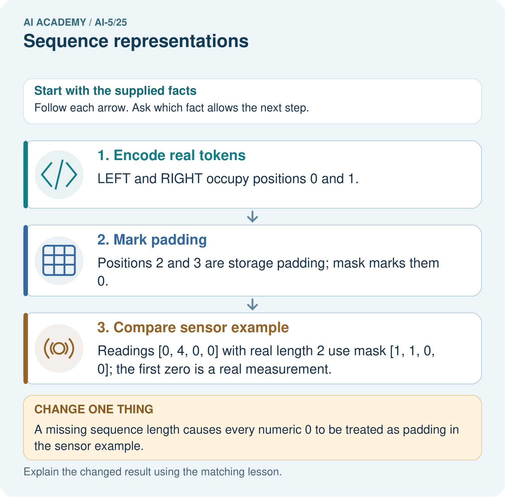
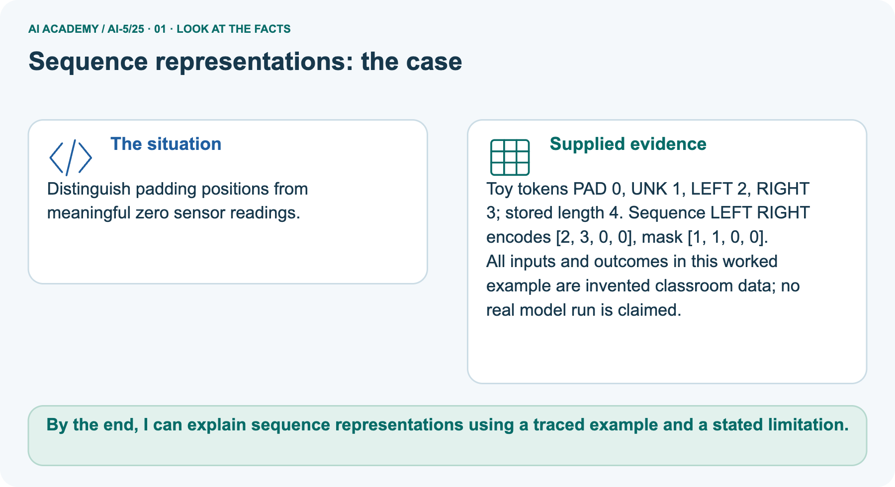
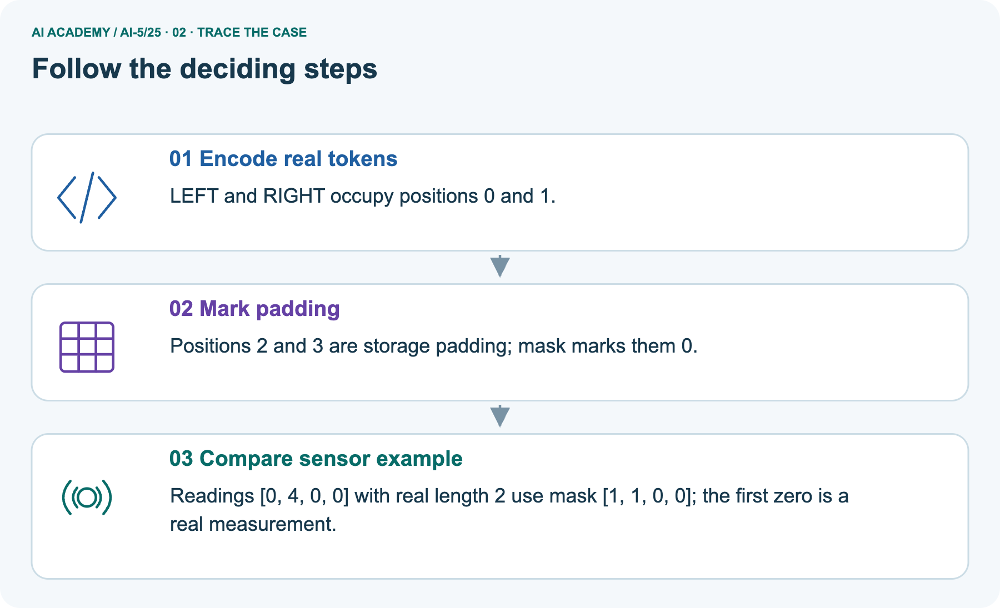
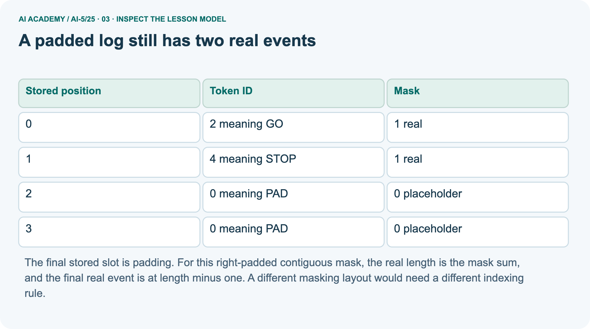
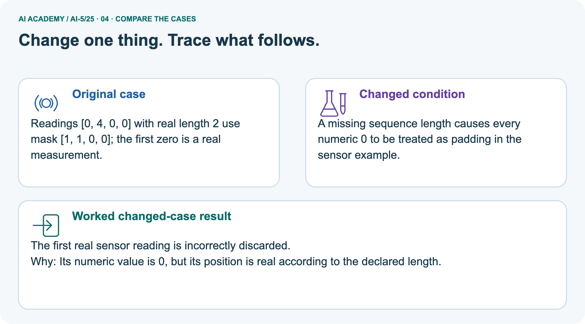
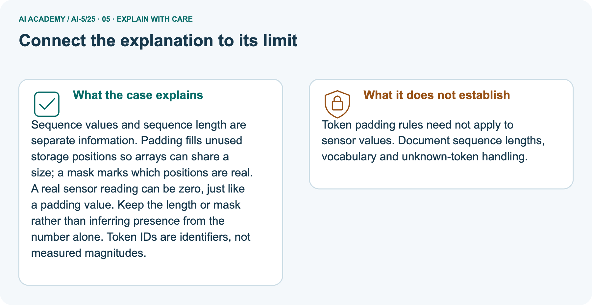

AI Academy · Level 5 · Grade 10 · Week 25 · Workbook
Sequence representations
Learn to understand, design, build, test and explain AI systems responsibly.
Project: Image-pattern Network Investigation
Workbook · 1 of 15
Recall and choose your starting point
Record your starting explanation for Sequence representations before opening notes. Show any later correction separately.
Try the recall before opening notes. Then use a different colour or a labelled second line to correct your explanation.
Augmentation and leakage
Without opening the old lesson, explain one key idea from Augmentation and leakage. Give an example and a mistake that the idea helps you avoid.
Pooling and spatial information
Without opening the old lesson, explain one key idea from Pooling and spatial information. Give an example and a mistake that the idea helps you avoid.
Learned representations
Without opening the old lesson, explain one key idea from Learned representations. Give an example and a mistake that the idea helps you avoid.
Lesson reference for workbook practice
Use this reference for the original W1–W3 and W5 exercises. The separately named independent case supplies its own changed facts; use those facts for that attempt before feedback.
Use fictional robot event logs whose symbols are GO, TURN and STOP. The task asks whether the final real event is STOP. This is a representation exercise, not a claim that an event log proves a robot is safe.
GO then STOP and STOP then GO contain the same symbols but have different final events.
| Log | Counts in GO TURN STOP order | Final event | Task answer |
|---|---|---|---|
| GO STOP | [1, 0, 1] | STOP | Yes |
| STOP GO | [1, 0, 1] | GO | No |
| GO TURN STOP | [1, 1, 1] | STOP | Yes |
A count vector discards order, so no deterministic rule using only the first two count vectors can distinguish their answers. A sequence of IDs preserves order if we retain each position.
Declare the vocabulary: PAD = 0, UNK = 1, GO = 2, TURN = 3 and STOP = 4. PAD is reserved for added storage positions; UNK represents a real but unrecognised symbol.
IDs are names, not measured amounts. STOP having ID 4 does not make it twice as much as GO with ID 2. Changing the vocabulary requires changing every consumer consistently.
Do not interpret numerical distance between IDs as semantic similarity.
Workbook · 2 of 15
Practise with fading help
Complete the supported Sequence representations trace and record the first step you can explain without help.
Use W2: Expose an order collision for Sequence representations. Record the answer once; the lesson and workbook refer to the same attempt.
| Given inputs | Procedure I chose | Middle steps | Result and check |
|---|---|---|---|
Workbook · 3 of 15
Individual reasoning check
Check the proposed Sequence representations explanation against the supplied facts before discussing it.
Use the worked case for Sequence representations. Proposed explanation: “Larger token IDs mean more of a concept”. Decide whether this explanation is supported.
Point to the step or supplied fact that decides; explain your repair if needed.
Workbook · 4 of 15
Independent transfer case
Write one first attempt at the reserved independent case before feedback. Repeated copies of that case refer to the same recorded attempt.
Independent case: Apply a fresh schema independently
Use PAD = 0, UNK = 1, OPEN = 2, CLOSE = 3, CHECK = 4 and five stored positions. Encode OPEN CHECK CLOSE and give its mask and final real position. Separately, sensor values [0, 6, 3, 0, 0] have that same mask.
Calculate their masked mean and the incorrect mean over all five slots.
Attempt this case before feedback. Record any help. Earlier examples below are further practice; a case already practised with feedback cannot establish fresh transfer.
Workbook · 5 of 15
W1 Encode and recover the final event
Encode and recover the final event. Apply the supplied Sequence representations facts and keep your reasoning.
Encode GO TURN STOP using the lesson vocabulary and four positions. Give its mask, real length and final real event.
Workbook · 6 of 15
W2 Expose an order collision
Expose an order collision. Apply the supplied Sequence representations facts and keep your reasoning.
Give two logs made of exactly GO, TURN and STOP once each that have equal count vectors but different answers to whether the final event is STOP.
Workbook · 7 of 15
W3 Separate unknown from padding
Separate unknown from padding. Apply the supplied Sequence representations facts and keep your reasoning.
Encode WAIT GO. Which positions are real? Compare it with PAUSE GO, and state what information the encoding loses.
Workbook · 8 of 15
W4 Apply a fresh schema independently
Attempt before feedback. If this repeats the selected independent case, reuse that first attempt; otherwise keep a separate record. Apply a fresh schema independently. Apply the supplied Sequence representations facts and keep your reasoning.
Use PAD = 0, UNK = 1, OPEN = 2, CLOSE = 3, CHECK = 4 and five stored positions. Encode OPEN CHECK CLOSE and give its mask and final real position. Separately, sensor values [0, 6, 3, 0, 0] have that same mask.
Calculate their masked mean and the incorrect mean over all five slots.
Workbook · 9 of 15
W5 Audit length and empty input
Audit length and empty input. Apply the supplied Sequence representations facts and keep your reasoning.
The encoder receives five events ending in STOP, then an empty log. What should it do under the lesson contract? Why should a program not simply crop the first and assume a final event for the second?
Workbook · 10 of 15
Project checkpoint and reflection
Connect Sequence representations to Image-pattern Network Investigation, identify a limit and choose the next useful test.
Add a labelled sequence representations evidence sheet to Image-pattern Network Investigation. Show how you can encode an ordered sequence with an explicit vocabulary.
Use the supplied fictional case and keep its inputs, intermediate steps, calculation or prediction, and limitation. Connect this record to last week’s record; a matching answer without a trace is insufficient.
Workbook · 11 of 15
Feedback, return check and learning record
Record the first repaired step and a different case to revisit after a delay.
| Evidence | My record |
|---|---|
| Worked alone / hint / model | |
| First step I repaired and why | |
| New case checked later; date and result | |
| What I can now explain without notes | |
| One remaining question |
Revisit this idea with your teacher after a delay. Familiarity is different from explaining and using it on a changed case.
Workbook · 12 of 15
Pictorial case practice: Sequence representations
Distinguish padding positions from meaningful zero sensor readings. Explain the labelled step before checking the changed condition.
Distinguish padding positions from meaningful zero sensor readings.
Toy tokens PAD 0, UNK 1, LEFT 2, RIGHT 3; stored length 4. Sequence LEFT RIGHT encodes [2, 3, 0, 0], mask [1, 1, 0, 0].
All inputs and outcomes in this worked example are invented classroom data; no real model run is claimed.

Which record lets the program distinguish the first and last zeros? Point to the relevant step in the picture, then write the changed result and the rule or evidence that supports it.
Record the help used
Support used: alone / hint / worked example. This record is practice evidence.
Project connection: For your Image-pattern Network Investigation, save the input, procedure, observed result and limitation of this check.
Label this worked example as practice; use a different, previously unreviewed case when checking independent understanding.
Workbook · 13 of 15
Project portfolio milestone
Keep this week’s input, deciding step, result and limit together in the Image-pattern Network Investigation record.
Project: Image-pattern Network Investigation
Current milestone: Prepare the demonstration. Gather reproducible instructions, evidence, access checks and remaining limitations.
For your Image-pattern Network Investigation, save the input, procedure, observed result and limitation of this check.
Label this worked example as practice; use a different, previously unreviewed case when checking independent understanding.
| Evidence to keep | My record |
|---|---|
| This week’s input and deciding step | |
| Prediction and actual result (or labelled paper trace) | |
| One change since the previous checkpoint and why | |
| One error or limit and the next test |
Workbook · 14 of 15
Supported practice and learning evidence
Try the supported questions before comparing with hints and feedback. Record what you repaired and the evidence you retained.
Use this supported practice once, in the browser or on paper. Keep the reserved independent assessment for a separate first attempt before teacher feedback.
Distinguish padding positions from meaningful zero sensor readings.
Practice 1: explain the deciding evidence
Which labelled step matches this detail? Readings [0, 4, 0, 0] with real length 2 use mask [1, 1, 0, 0]; the first zero is a real measurement.
1. Encode real tokens
2. Compare sensor example
3. Mark padding
Hint · try first
Hint if needed: Read the steps in the pictorial case. Match the supplied detail to the stage that performs or records it.
Feedback · compare after trying
After your attempt, compare with the supported explanation: Compare sensor example Readings [0, 4, 0, 0] with real length 2 use mask [1, 1, 0, 0]; the first zero is a real measurement.
Sequence values and sequence length are separate information. Padding fills unused storage positions so arrays can share a size; a mask marks which positions are real.
A real sensor reading can be zero, just like a padding value. Keep the length or mask rather than inferring presence from the number alone. Token IDs are identifiers, not measured magnitudes.
Practice 2: explain the deciding evidence
Changed case · predict first
Changed-case practice: A missing sequence length causes every numeric 0 to be treated as padding in the sensor example. Which conclusion is supported by the supplied facts?
1. This one example guarantees correct results for every future input.
2. The first real sensor reading is incorrectly discarded.
3. We can decide the result without examining the changed input or the procedure.
Hint · try first
Hint if needed: Use the changed condition and the deciding step in the pictorial trace. The answer must say what follows from those facts.
Feedback · compare after trying
After your attempt, compare with the supported explanation: The first real sensor reading is incorrectly discarded. Its numeric value is 0, but its position is real according to the declared length.
Repair a missing building block
Review Augmentation and leakage (ai-5/24). Goal: Check whether a transformation preserves the task label. Short practice: How many independent source groups are in the final test?
Point to the relevant step in the picture, then write the changed result and the rule or evidence that supports it.. Return to this week and explain what you changed.
Review Pooling and spatial information (ai-5/22). Goal: Compute max and mean pooling under an explicit window rule. Short practice: Can the max map reveal where the 4 originally appeared?
Point to the relevant step in the picture, then write the changed result and the rule or evidence that supports it.. Return to this week and explain what you changed.
Review Learned representations (ai-5/19). Goal: Trace an input through a hidden representation and a decision rule. Short practice: Why can no deterministic head using only the sum classify both correctly?
Point to the relevant step in the picture, then write the changed result and the rule or evidence that supports it.. Return to this week and explain what you changed.
Predict, run and debug
The browser lab lets you edit the supported Python examples already included in this lesson. Predict first, run, inspect the actual output or error, change one input, then run again.
Keep code, predictions, actual results and a reasoned revision together. On paper, label your result as a trace rather than an execution.
Keep your completed work
Use Download completed work in the hosted lesson to export your answers, reflections, practice feedback and code-run evidence. Open the HTML copy to read or print it.
Drafts stay in this browser when storage is available; clear drafts on a shared device.
Workbook · 15 of 15
Visual concept journey
Explain each Sequence representations picture from its labels, then record a relevant limit.
01. Sequence representations: the case

Distinguish padding positions from meaningful zero sensor readings. Supplied facts: Toy tokens PAD 0, UNK 1, LEFT 2, RIGHT 3; stored length 4. Sequence LEFT RIGHT encodes [2, 3, 0, 0], mask [1, 1, 0, 0].
All inputs and outcomes in this worked example are invented classroom data; no real model run is claimed.
Point to the given fact that matters most. Explain why it matters.
02. Follow the deciding steps

Encode real tokens: LEFT and RIGHT occupy positions 0 and 1. → Mark padding: Positions 2 and 3 are storage padding; mask marks them 0. → Compare sensor example: Readings [0, 4, 0, 0] with real length 2 use mask [1, 1, 0, 0]; the first zero is a real measurement.
Point to each numbered stage and explain which recorded input it uses.
03. A padded log still has two real events

A padded log still has two real events. 0 | 2 meaning GO | 1 real. 1 | 4 meaning STOP | 1 real. 2 | 0 meaning PAD | 0 placeholder. 3 | 0 meaning PAD | 0 placeholder
Read the labels and values. Explain the relationship the model shows.
04. Change one thing. Trace what follows.

Original case: Readings [0, 4, 0, 0] with real length 2 use mask [1, 1, 0, 0]; the first zero is a real measurement.
Changed condition: A missing sequence length causes every numeric 0 to be treated as padding in the sensor example. Expected result: The first real sensor reading is incorrectly discarded.
Reason: Its numeric value is 0, but its position is real according to the declared length.
Predict before checking the worked changed-case result. Name what changed and what the supplied facts allow you to conclude.
05. Connect the explanation to its limit

Sequence values and sequence length are separate information. Padding fills unused storage positions so arrays can share a size; a mask marks which positions are real.
A real sensor reading can be zero, just like a padding value. Keep the length or mask rather than inferring presence from the number alone. Token IDs are identifiers, not measured magnitudes.
Limit: Token padding rules need not apply to sensor values. Document sequence lengths, vocabulary and unknown-token handling.
Explain the case, then point to a limit on the claim.
06. Make the idea visible in your project

For your Image-pattern Network Investigation, save the input, procedure, observed result and limitation of this check.
Label this worked example as practice; use a different, previously unreviewed case when checking independent understanding. Draw your input, deciding step, result and limit.
Supported question: Which record lets the program distinguish the first and last zeros? Point to the relevant step in the picture, then write the changed result and the rule or evidence that supports it.
Draw your project trace and justify the deciding step using evidence.